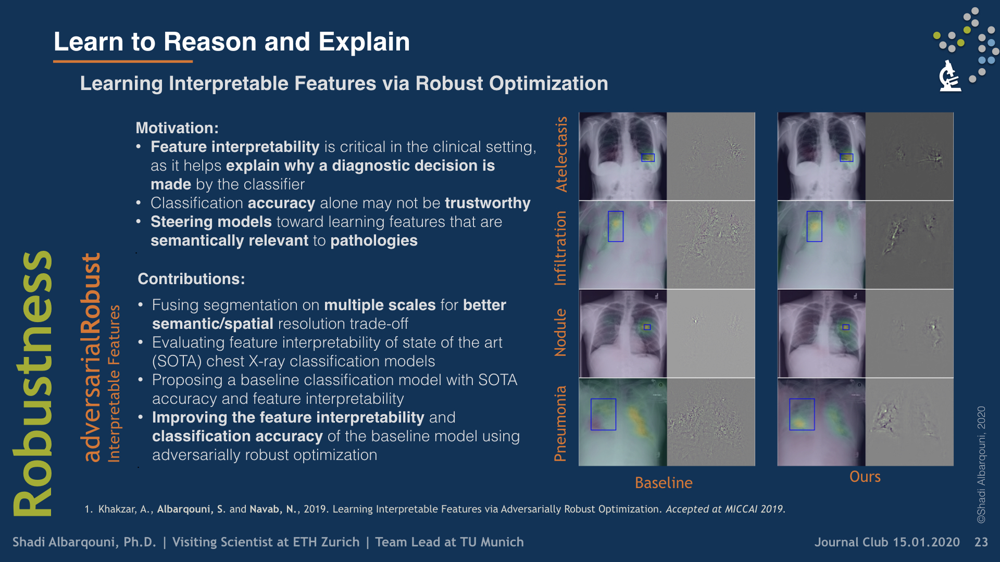
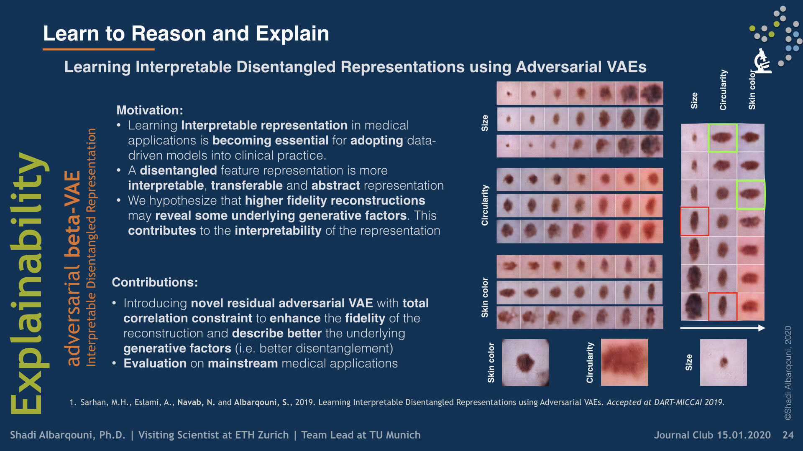
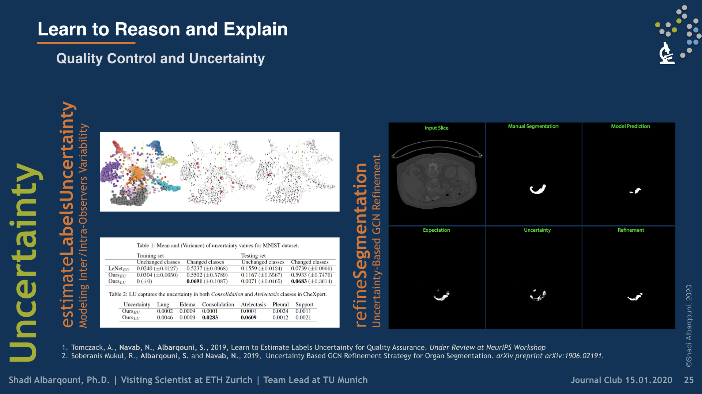

Learn to Reason and Explain
 Illustrative figure by Shadi Albarqouni
Illustrative figure by Shadi Albarqouni
To build explainable AI models that are interpretable for our end-users, i.e., clinicians, we have investigated two research directions. First, we have utilized some visualization techniques to explain and interpret “black box” models by propagating back the gradient of the class of interest to the image space where you can see the relevant semantics, so-called Gradient Class Activation Maps (GradCAM). Sooner, we found out such techniques do not produce meaningful results. In other words, irrelevant semantics could be highly activated in GradCAM, yielding unreliable explanation tools. To overcome such a problem, we have introduced a robust optimization loss in our MICCAI paper (Khakzar et al. 2019), which generated adversarial examples enforcing the network to only focus on relevant features and probably correlated with other examples belonging to the same class.

Second, we have investigated designing and building explainable models by i) uncertainty quantification and ii) disentangled feature representation. In the first category, we started understanding the uncertainty estimates generated by Monte-Carlo Dropout, the approximate of Bayesian Neural Networks, and other techniques, e.g. PointNet, in Camera Relocalization problem (Bui et al. 2018), to shed light on the ambiguity present in the dataset. We took a step further, and use such uncertainty estimates to refine the segmentation in an unsupervised fashion (Soberanis-Mukul et al. 2019, Bui et al. 2019).

Recently, we have investigated modeling the labels uncertainty, which is related to the inter-/intra-observer variability, and produced a metric to quantify such uncertainty. We have shown in our paper (Tomczack et al. 2019) that such uncertainty can be rather disentangled from the model and data uncertainties, so-called, epistemic, and aleatoric uncertainties, respectively. We believe such uncertainty is of high importance to the referral systems. In the second category, we have studied the variational methods, and disentangled representations, where the assumption here that some generative factors, e.g., color, shape, and pathology, will be captured in the lower-dimensional latent space, and one can easily go through the manifold and generate tons of example by sampling from the posterior distribution. We were among the firsts who introduce such concepts in medical imaging by investigating the influence of residual blocks and adversarial learning on disentangled representation (Sarhan et al. 2019). Our hypothesis that better reconstruction fidelity would force the network to model high resolution, which might have a positive influence on the disentangled representation, in particular, some pathologies.

Collaboration:
- Dr. Abouzar Eslami, Carl Zeiss Meditec AG
- PD. Dr. Slobodan Ilic, Siemens AG
Funding:
- Siemens AG
Shadi Albarqouni
AI Young Investigator Group Leader at Helmholtz AI | TUM Junior Fellow at TU Munich | Former Visiting Scientist at Imperial College London and ETH Zürich
Publications

An Uncertainty-Driven GCN Refinement Strategy for Organ Segmentation
Organ segmentation in CT volumes is an important pre-processing step in many computer assisted intervention and diagnosis methods. In recent years, convolutional neural networks have dominated the state of the art in this task. However, since this problem presents a challenging environment due to high variability in the organ’s shape and similarity between tissues, the generation of false negative and false positive regions in the output segmentation is a common issue. Recent works have shown that the uncertainty analysis of the model can provide us with useful information about potential errors in the segmentation. In this context, we proposed a segmentation refinement method based on uncertainty analysis and graph convolutional networks. We employ the uncertainty levels of the convolutional network in a particular input volume to formulate a semi-supervised graph learning problem that is solved by training a graph convolutional network. To test our method we refine the initial output of a 2D U-Net. We validate our framework with the NIH pancreas dataset and the spleen dataset of the medical segmentation decathlon. We show that our method outperforms the state-of-the-art CRF refinement method by improving the dice score by 1% for the pancreas and 2% for spleen, with respect to the original U-Net’s prediction. Finally, we perform a sensitivity analysis on the parameters of our proposal and discuss the applicability to other CNN architectures, the results, and current limitations of the model for future work in this research direction. For reproducibility purposes, we make our code publicly available at https://github.com/rodsom22/gcn_refinement

6D Camera Relocalization in Ambiguous Scenes via Continuous Multimodal Inference
We present a multimodal camera relocalization framework that captures ambiguities and uncertainties with continuous mixture models defined on the manifold of camera poses. In highly ambiguous environments, which can easily arise due to symmetries and repetitive structures in the scene, computing one plausible solution (what most state-of-the-art methods currently regress) may not be sufficient. Instead we predict multiple camera pose hypotheses as well as the respective uncertainty for each prediction. Towards this aim, we use Bingham distributions, to model the orientation of the camera pose, and a multivariate Gaussian to model the position, with an end-to-end deep neural network. By incorporating a Winner-Takes-All training scheme, we finally obtain a mixture model that is well suited for explaining ambiguities in the scene, yet does not suffer from mode collapse, a common problem with mixture density networks. We introduce a new dataset specifically designed to foster camera localization research in ambiguous environments and exhaustively evaluate our method on synthetic as well as real data on both ambiguous scenes and on non-ambiguous benchmark datasets.

Fairness by Learning Orthogonal Disentangled Representations
Learning discriminative powerful representations is a crucial step for machine learning systems. Introducing invariance against arbitrary nuisance or sensitive attributes while performing well on specific tasks is an important problem in representation learning. This is mostly approached by purging the sensitive information from learned representations. In this paper, we propose a novel disentanglement approach to invariant representation problem. We disentangle the meaningful and sensitive representations by enforcing orthogonality constraints as a proxy for independence. We explicitly enforce the meaningful representation to be agnostic to sensitive information by entropy maximization. The proposed approach is evaluated on five publicly available datasets and compared with state of the art methods for learning fairness and invariance achieving the state of the art performance on three datasets and comparable performance on the rest. Further, we perform an ablative study to evaluate the effect of each component.

Uncertainty-based graph convolutional networks for organ segmentation refinement
Organ segmentation is an important pre-processing step in many computer assisted intervention and diagnosis methods. In recent years, CNNs have dominated the state of the art in this task. Organ segmentation scenarios present a challenging environment for these methods due to high variability in shape and similarity with background. This leads to the generation of false negative and false positive regions in the output segmentation. In this context, the uncertainty analysis of the model can provide us with useful information about potentially misclassified elements. In this work we propose a method based on uncertainty analysis and graph convolutional networks as a post-processing step for segmentation. For this, we employ the uncertainty levels of the CNN to formulate a semi-supervised graph learning problem that is solved by training a GCN on the low uncertainty elements. Finally, we evaluate the full graph on the trained GCN to get the refined segmentation. We test our framework in refining the output of pancreas and spleen segmentation models. We show that the framework can increase the average dice score in 1% and 2% respectively for these problems. Finally, we discuss the results and current limitations of the model that lead to future work in this research direction

Adversarial Networks for Camera Pose Regression and Refinement
Despite recent advances on the topic of direct camera pose regression using neural networks, accurately estimating the camera pose of a single RGB image still remains a challenging task. To address this problem, we introduce a novel framework based, in its core, on the idea of implicitly learning the joint distribution of RGB images and their corresponding camera poses using a discriminator network and adversarial learning. Our method allows not only to regress the camera pose from a single image, however, also offers a solely RGB-based solution for camera pose refinement using the discriminator network. Further, we show that our method can effectively be used to optimize the predicted camera poses and thus improve the localization accuracy. To this end, we validate our proposed method on the publicly available 7-Scenes dataset improving upon the results of direct camera pose regression methods.

Learning interpretable disentangled representations using adversarial vaes
Learning Interpretable representation in medical applications is becoming essential for adopting data-driven models into clinical practice. It has been recently shown that learning a disentangled feature representation is important for a more compact and explainable representation of the data. In this paper, we introduce a novel adversarial variational autoencoder with a total correlation constraint to enforce independence on the latent representation while preserving the reconstruction fidelity. Our proposed method is validated on a publicly available dataset showing that the learned disentangled representation is not only interpretable, but also superior to the state-of-the-art methods. We report a relative improvement of 81.50% in terms of disentanglement, 11.60% in clustering, and 2% in supervised classification with a few amounts of labeled data.

Learning Interpretable Features via Adversarially Robust Optimization
Neural networks are proven to be remarkably successful for classification and diagnosis in medical applications. However, the ambiguity in the decision-making process and the interpretability of the learned features is a matter of concern. In this work, we propose a method for improving the feature interpretability of neural network classifiers. Initially, we propose a baseline convolutional neural network with state of the art performance in terms of accuracy and weakly supervised localization. Subsequently, the loss is modified to integrate robustness to adversarial examples into the training process. In this work, feature interpretability is quantified via evaluating the weakly supervised localization using the ground truth bounding boxes. Interpretability is also visually assessed using class activation maps and saliency maps. The method is applied to NIH ChestX-ray14, the largest publicly available chest x-rays dataset. We demonstrate that the adversarially robust optimization paradigm improves feature interpretability both quantitatively and visually.
Scene coordinate and correspondence learning for image-based localization
Scene coordinate regression has become an essential part of current camera re-localization methods. Different versions, such as regression forests and deep learning methods, have been successfully applied to estimate the corresponding camera pose given a single input image. In this work, we propose to regress the scene coordinates pixel-wise for a given RGB image by using deep learning. Compared to the recent methods, which usually employ RANSAC to obtain a robust pose estimate from the established point correspondences, we propose to regress confidences of these correspondences, which allows us to immediately discard erroneous predictions and improve the initial pose estimates. Finally, the resulting confidences can be used to score initial pose hypothesis and aid in pose refinement, offering a generalized solution to solve this task.